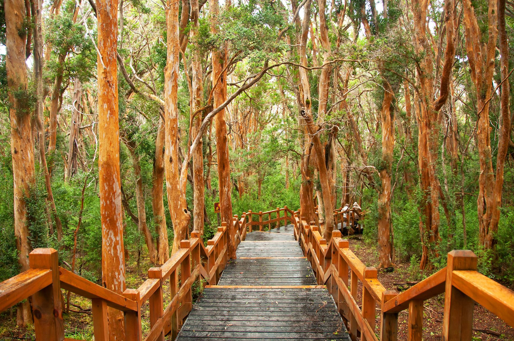

Bariloche es conocida por sus discotecas y su circuito turístico nocturno, donde el español se mezcla con un sinfín de otras lenguas. Se pueden recorrer la variedad de pubs temáticos y bares mientras se disfruta de tragos y buena música, también se puede disfrutar en las cuatro estaciones del año. Allí se encuentra una naturaleza que premia a cada visitante con paisajes maravillosos, desde picos nevados y lengas cobrizas, hasta valles cubiertos de flores y aguas cristalinas.
Existe una variedad de actividades para disfrutar: excursiones tradicionales, paseos lacustres, nieve para todos los gustos, la mejor gastronomía, turismo joven, salidas románticas, actividades familiares, aventura, tranquilidad y una agenda cultural diversa.
¿COMO LLEGAR?
Desde Buenos Aires se puede ir por Santa Rosa: Acceso Oeste, Ruta Nacional Nº 5, Ruta Nacional Nº 35, Ruta Nacional Nº 152, Ruta Nacional Nº 143, Ruta Provincial Nº 20, Ruta Nacional Nº 151, Ruta Nacional Nº 22, Ruta Nacional Nº 237 y Ruta Nacional N°40. Por Bahía Blanca: Ruta Nacional Nº 3, Ruta Nacional Nº 22, Ruta Nacional Nº 237 y Ruta Nacional N°40.
San Carlos de Bariloche disfruta de un clima mediterráneo de verano suave. La temperatura máxima en San Carlos de Bariloche es de 11°C de media a lo largo del año (de 4°C en julio a 19°C en enero). Tiene unas precipitaciones de 806 mm a lo largo del año, con un mínimo de 25mm en enero y un máximo de 133 mm en agosto.
De enero a marzo el clima es espléndido. Por ejemplo 16°C es la temperatura máxima en marzo. En el mes de abril el clima es simplemente bueno. Al atardecer la temperatura media es de 10°C y, en abril, se esperan 3 días de lluvia. Entre mayo y septiembre el clima es muy malo. Por ejemplo 8°C es la temperatura máxima en septiembre y puede esperar tener 57 mm de precipitaciones/mes durante este periodo. Entre octubre y noviembre el clima es correcto. La temperatura sube hasta 14°C y llueve cerca de 8% durante noviembre. En diciembre el clima es espléndido. el termómetro sube hasta 17°C y, en diciembre, se esperan 2 días de lluvia.
¿QUE HACER?
Cerro Catedral

Saliendo desde Bariloche, emprendemos el viaje hacia San Martín de los Andes, primero pasamos por Villa la Angostura, para luego encarar el camino de los Siete Lagos, donde podrás disfrutar de los más hermosos paisajes de la región, lagos de aguas cristalinas con inusuales colores verdes y azules en el marco de una región de bosques frondosos y añejos. Llegamos a San Martín de los Andes, típica Ciudad de Montaña, tendrás allí el tiempo necesario para recorrer la Ciudad, visitar la ribera del Lago Lacar, disfrutar de la variada y riquísima gastronomía de la zona, luego nos reunimos en un punto de encuentro para emprender el regreso a Bariloche.
Circuito Chico

Es un paseo de medio día, que bordea la ladera sur del Lago Nahuel Huapi, con un recorrido de aproximadamente 65 km. A través de su camino podremos pasar por playas como Playa Bonita o Bahia Serena, algunos miradores naturales, como Bahía López y Punto Panorámico, que son sin dudas los lugares ideales para contemplar lo maravilloso del paisaje; desde allí podrás observar la aerosilla del Cerro Campanario, la bahía Llao Llao, el Puerto Pañuelo, entre otras vistas fascinantes.
Bosque de Arrayanes con Isla Victoria
Tras una hora de navegación, partiendo desde Puerto Pañuelo en la imponente Península de Llao Llao, se arriba a la península de Quetrihue, lugar de asiento del Bosque de Arrayanes, ubicada en el noreste del Lago Nahuel Huapi.
El Arrayán es un arbusto de exquisito color azafrán y flores blancas. En este lugar, único en el mundo, toma la envergadura de “árbol” para formar un mágico e inusual Bosque. Luego se navega hacia Puerto Anchorena, Isla Victoria, en donde es posible disfrutar de una flora autóctona, prolífera en especies de magnífico porte. Dejarse llevar en el tiempo, recorriendo los senderos que llegan hasta Playa del Toro, para descubrir allí las pinturas rupestres hechas por pueblos originarios habitantes de esta zona, en el marco de una espléndida playa de arena volcánica, es una experiencia inolvidable y mágica.
San Martín de los Andes por los Siete Lagos
Descubra por qué Bariloche es famoso por sus lagos en una excursión de día completo por uno de los paisajes más impresionantes de la Patagonia. Subirá a bordo de un cómodo autobús para realizar el recorrido panorámico por la carretera de los Siete Lagos. Viaje a lo largo de una pintoresca ruta que serpentea a través de cuerpos de aguas azules y esmeraldas, espectaculares formaciones rocosas, ríos y bosques alpinos. Haga paradas para empaparse del paisaje en las playas junto al lago y otros miradores panorámicos. Mientras recorre el trayecto a lo largo de las orillas del lago Nahuel Huapi y del río Limay, escuchará los comentarios informativos de su guía sobre la historia, los recursos naturales, la flora y la fauna de la región.
___________________________________________________________________
¿DONDE ALOJARSE?
Hotel Panamericano Bariloche
Hotel Panamericano Bariloche
San Martín 536 70, R8400 San Carlos de Bariloche, Río Negro
Tel: 0294 440-920
★ ★ ★
Reserva YA
Hotel Concorde Bariloche
Hotel Concorde Bariloche
Libertad 131, San Carlos de Bariloche, Río Negro
Tel: 0294 442-4500
★ ★ ★
Reserva YA

Aldea Andina Hotel&Spa
Aldea Andina Hotel&Spa
Av. de los Pioneros 2000, R8400 San Carlos de Bariloche, Río Negro
Tel: 011 6009-2420
★ ★ ★
Reserva YA
___________________________________________________________________
¿DONDE COMER?
Ãnima Restaurante
Ãnima Restaurante
Cto. Chico, R8400 San Carlos de Bariloche, Río Negro
Tel: 0294 459-8900
★ ★ ★ ★ ★
+Info
Nomeolvides Casa de Té
Nomeolvides Casa de Té
Parque Nacional Perito Moreno 501, R8400 San Carlos de Bariloche, Río Negro
Tel: 0294 458-6078
★ ★ ★ ★ ★
+Info
Stag
Stag
Sobre la costa del Hua Huan, Lago Nahuel Huapi 7549, R8400 San Carlos de Bariloche, Río Negro
Tel: 0294 446-2889
★ ★ ★ ★ ★
+Info